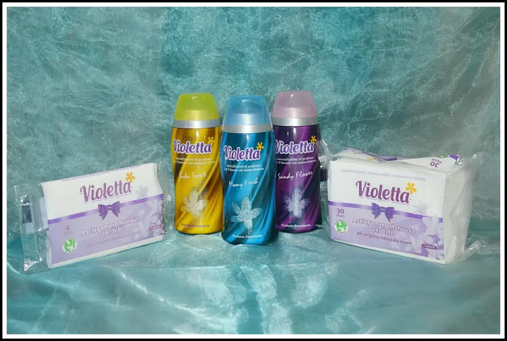
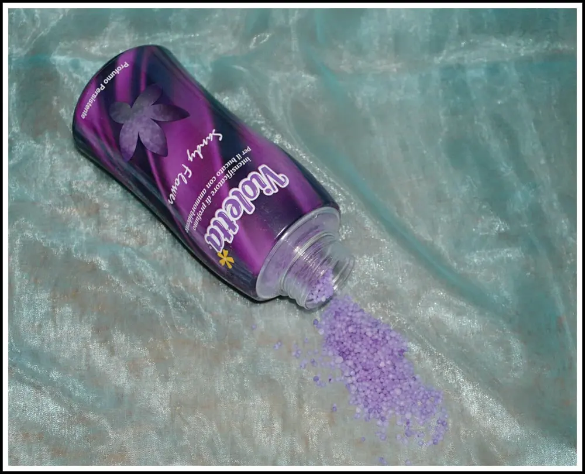
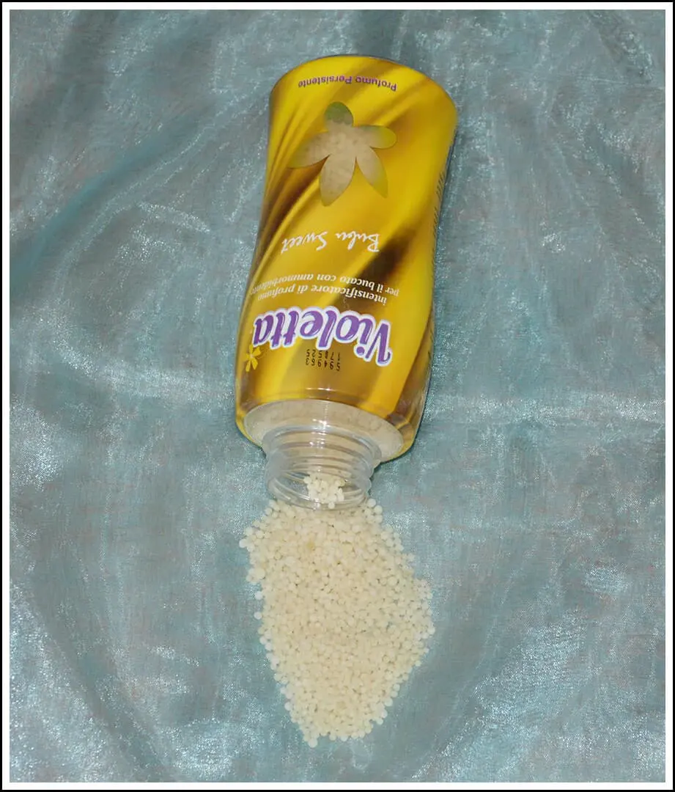
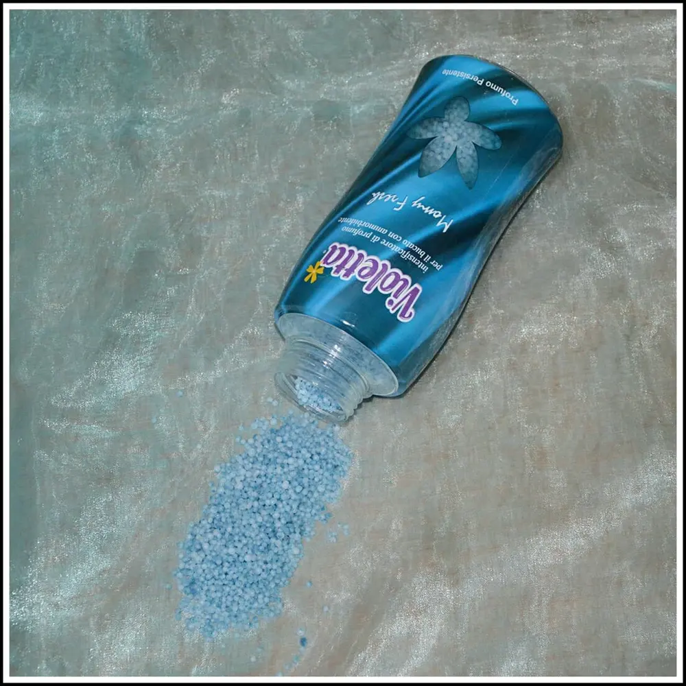
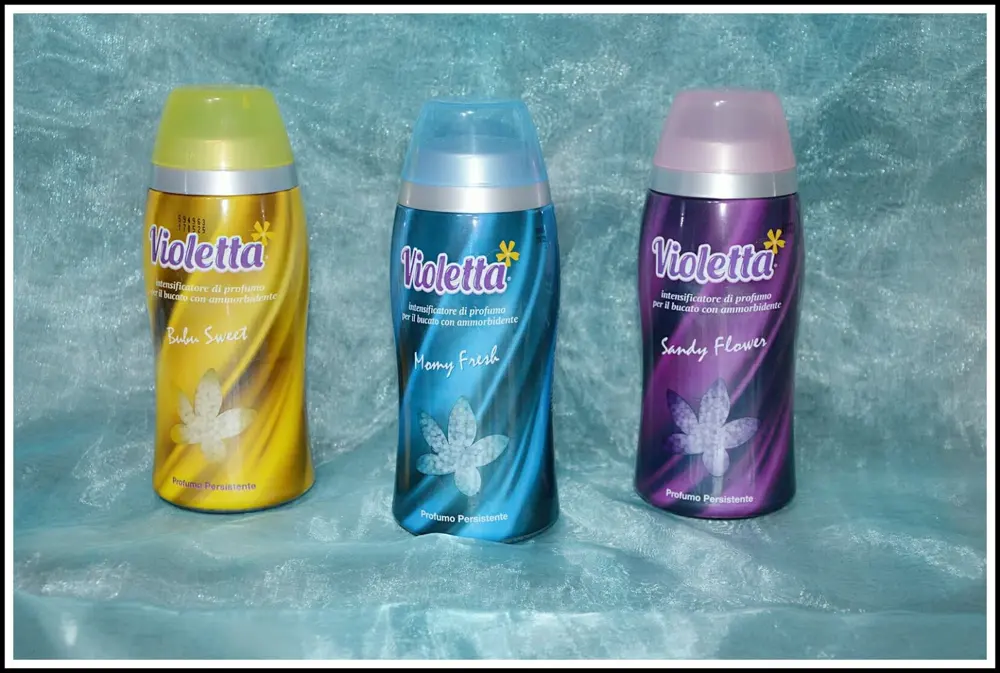
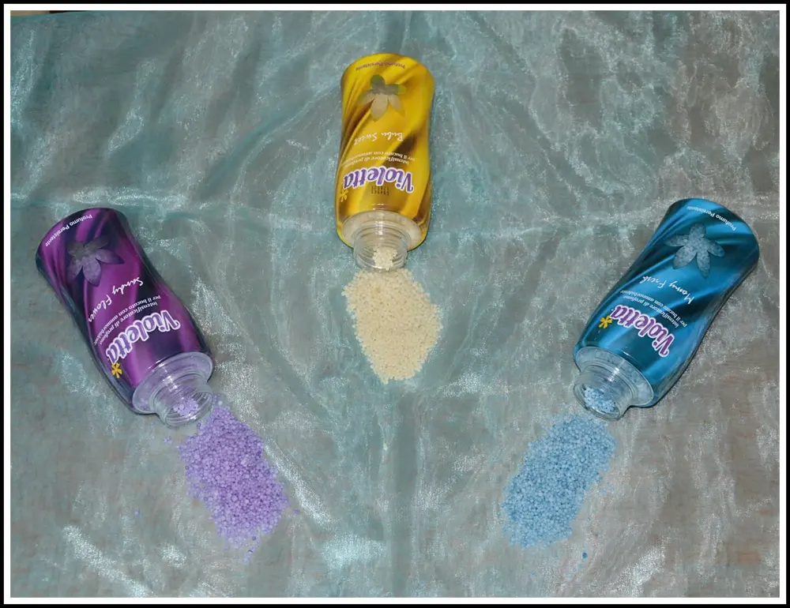
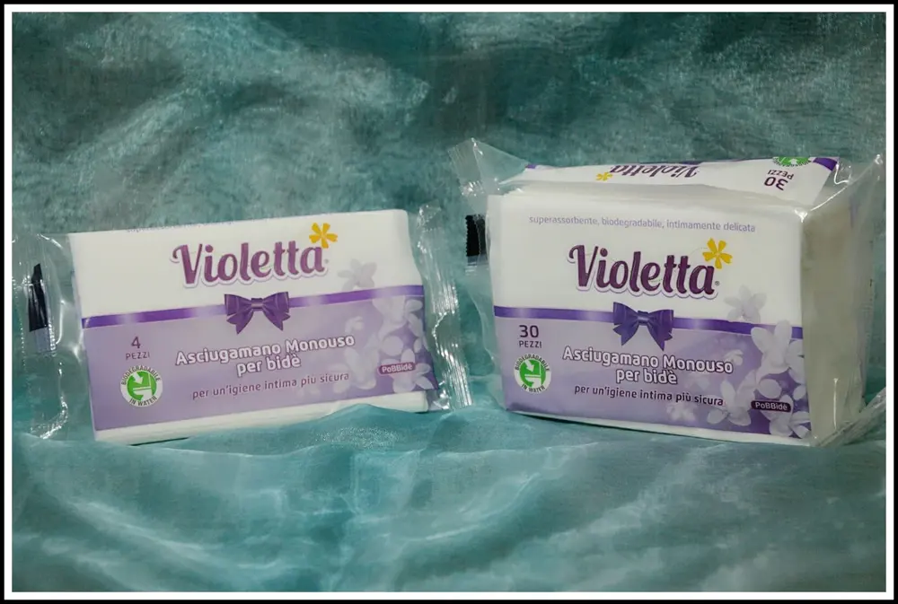

VIOLETTA DETERSIVI

Oggi vi propongo un altro marchio per il bucato, un'altra alternativa per l'igiene della casa e della persona.
Vi parlerò di VIOLETTA, un articolo già in commercio che sicuramente avrete visto nei negozi.
Ho avuto il piacere di provare gli intensificatori di profumo per il bucato con ammorbidente e le salviette monouso bidè.

Vi spiego: VIOLETTA CRISTALLI "SANDY FLOWER"
Un ammorbidente intensificatore di profumo ed ha una fragranza bellissima floreale.
La confezione è di colore viole e anche i cristalli interni sono viola.
Per l'uso è dotato di un tappo dosatore (oltre al tappo di chiusura), che faciliterà il tutto.
Inserire il prodotto in granuli direttamente in lavatrice insieme al bucato, aggiungere il detersivo e iniziare il ciclo di lavaggio.
Noterete che già all'apertura del cestello sentirete una profumazione piacevole ed avvolgente.

VIOLETTA "BUBU SWEET".
La confezione è identica a quella viola ma poiché appunto, cambia fragranza, anche il colore della bottiglia cambia colore. Il Bubu Sweet è di colore giallo, come anche i cristalli all'interno solo gialli.
La fragranza del Bubu Sweet è dolce e delicato.

E poi infine ho provato la terza profumazione:
VIOLETTA "MOMY FRESH".
Quest'altra bottiglia e quindi anche i cristalli sono di colore blu.

Tutt'e tre le confezioni sono della stessa dimensione cioè 275 Gr.

Sono adatti ad ogni tipo di tessuto, qualsiasi colore e a tutte le quantità di vestiti.
Cosa importante, non bisogna versare i granelli nel cassetto della lavatrice ma direttamente nel cestello insieme ai vestiti, come ho spiegato già sopra. Per il lavaggio a mano non è molto consigliato. Quindi non usatelo.
Inoltre, in caso di lavaggio a basse temperature, è opportuno sciogliere preventivamente un misurino di cristalli con acqua calda.
Il costo di ogni bottiglia poi è davvero piccolissimo.
Prezzo: 2,99€

VIOLETTA MONOUSO BIDÈ 4 pezzi
Sno delle salviette monouso utili in casa ma anche fuori casa soprattutto.
Sono state pensate per asciugare delicatamente le parti intime di uomo e donna in seguito al lavaggio ovviamente.
Le tovagliette sono asciutte e quindi prive di qualsiasi prodotto umidificante.
Ideate con il brevetto biodegradabili, gli asciugamani possono essere gettati tranquillamente nel wc in modo semplice e veloce. La praticità e la comodità a portata di mano.
Prezzo: 0,29€
VIOLETTA MONOUSO BIDÈ 30 pezzi
PREZZO: 1,29€
